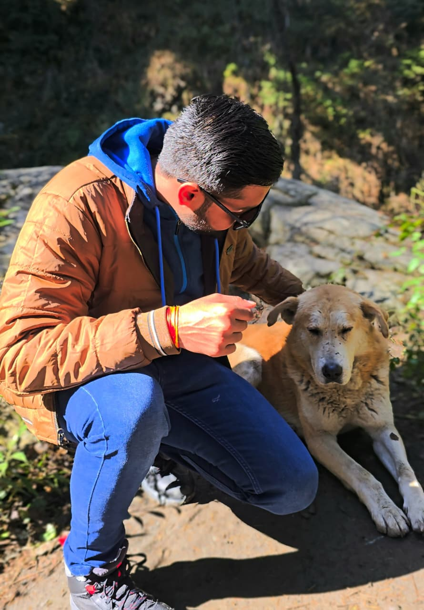
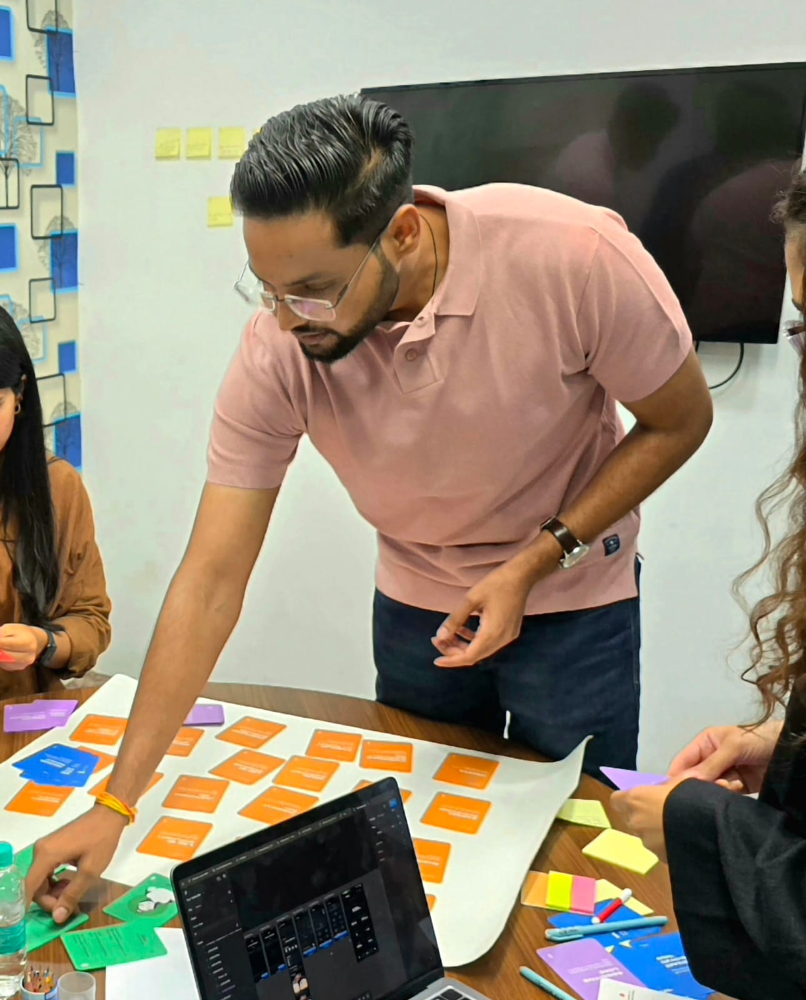
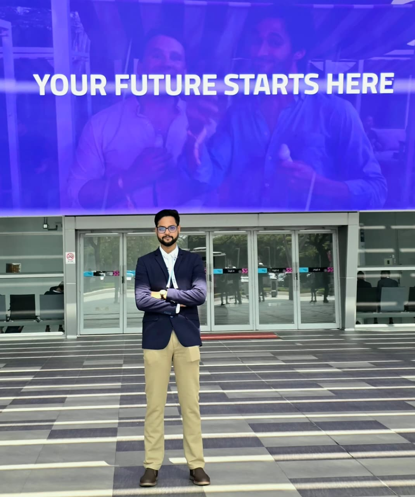
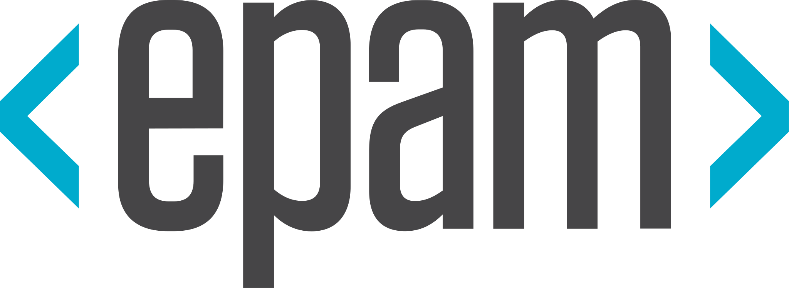
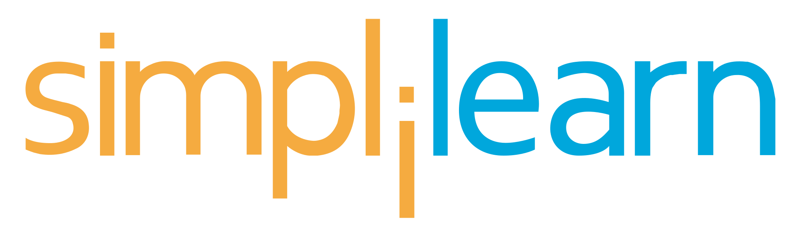

Hi, I'm Shivanshu



An AI & UX Strategist who turns bold ideas into real business growth!
What I Do
Core capabilities I bring to product teams — spanning research, strategy, design, and delivery.
Product Strategy & Problem Framing
Defining the right problem before jumping to solutions. Aligning stakeholders around clear objectives and outcomes.
UX Research & Insight Synthesis
Qualitative and quantitative research translated into actionable insights that drive product direction.
AI Product & Agent Design
Designing AI-driven tools and agents, shaping workflows, human–AI interaction, guardrails, and outcomes that teams can trust.
End-to-End Product Design
From wireframes to high-fidelity execution: designing flows, interactions, and systems that ship and scale.
Business-Driven UX
Designing with revenue, retention, and operational efficiency in mind — not just aesthetics.
Failure Analysis & Iteration
Honest evaluation of what didn't work. Extracting learning from shipped products that were rolled back or sunset.
My Journey
Where I've contributed — across product, design, and strategy.


Sr. UX Strategist
Leading 4 projects in Digital Finance, focused on AI-powered cost planning, analytics tools, and a conversational RAG-based chatbot.


Sr. Product Designer
Worked on Forge, Atlassian's developer platform that lets teams build and host apps directly on Atlassian products, and Criterion. Laid the design foundations for both.


Designer II
Built end-to-end product experiences for enterprise clients, turning complex workflows into something people actually want to use.


UX Designer I
Shaped the learning experience for an ed-tech platform, helping boost how learners engage with courses and actually finish them.

Solution Designer
Designed solutions for smart city and public safety platforms, making sure technical needs and real user needs actually met in the middle.
Impact Across Projects
Honest numbers from real work — including things that didn't go as planned.
12+
Products shipped
5
Domains worked in
35%
Avg. efficiency improvement
2
Products sunset or rolled back
Selected Work
Proof, not promises. Each project includes the problem, process, and measured outcome.
Patient Portal Redesign
MedTech Corp
Redesigned the patient-facing portal to reduce support tickets and improve appointment completion rates across three care pathways.
Workflow Automation Dashboard
CloudOps Inc.
Designed an internal dashboard that automated manual reporting workflows, saving the operations team 20+ hours per week.
Clinical Trial Data Platform
PharmaSolutions Ltd.
Built a data ingestion and visualization platform for clinical trial managers to track patient enrollment and site performance in real time.
Checkout Flow Redesign
RetailX
A checkout simplification initiative that looked promising in testing but decreased conversion in production. Rolled back after two weeks with documented learnings.
How I Approach Design
My design philosophy in practice — not theory.
Design is decision-making
Every pixel is a decision with trade-offs. I focus on making those trade-offs explicit — weighing user needs, technical constraints, and business goals rather than defaulting to "best practices."
Balancing user needs with business constraints
The best solution isn't always the ideal one. I work with what's real — timelines, technical debt, organizational politics — and find the highest-impact design within those boundaries.
Comfort with ambiguity
Early-stage projects rarely have clear requirements. I'm comfortable starting with uncertainty, running scrappy research, and iterating toward clarity rather than waiting for a perfect brief.
Willingness to recommend not building something
Sometimes the most valuable design contribution is identifying that a feature shouldn't exist. I've recommended killing initiatives based on research — and been right more often than not.
About Me
I'm a product designer who came into this field through an unconventional path. Over the years, I've worked with startups, mid-stage companies, and enterprise teams — always at the intersection of user experience and business outcomes. I believe the best designers are pragmatic, curious, and honest about what they don't know.
Outside of work, I'm interested in systems thinking, behavioral psychology, and how organizations make decisions under uncertainty. I'm always learning and always shipping.
Read My StoryGet in Touch
If you'd like to discuss a role, a project, or a collaboration, feel free to reach out.
hello@shivanshmathur.com
Preferred method of contact
linkedin.com/in/shivanshmathur
Connect or send a message
Schedule a Call
Book a 30-minute chat
Via Calendly
Location
San Francisco, CA
Pacific Time (PT) · Open to remote
Currently open to full-time roles in Product Design and UX. Also open to consulting, advisory work, and interesting collaborations.
Prefer to explore my work first?